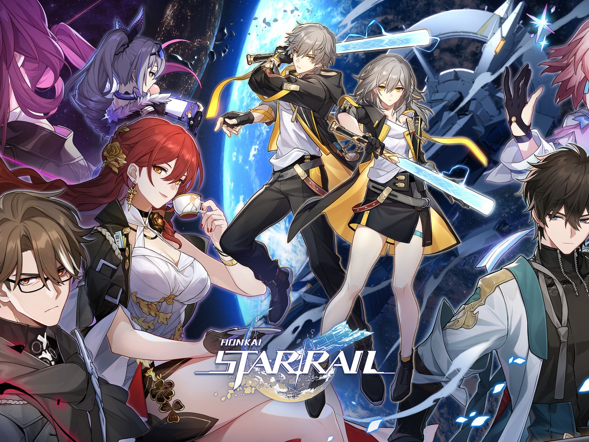
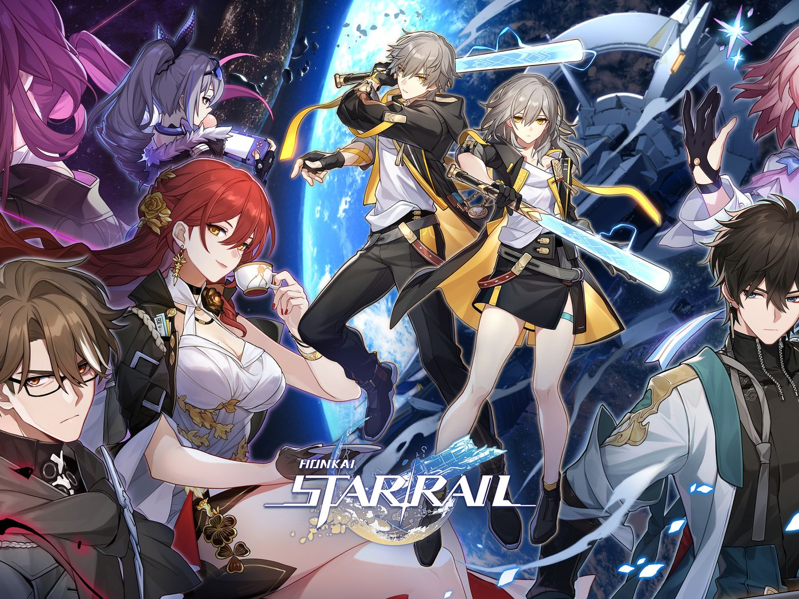

Honkai: Star Rail Beginners' Guide
 

Soundtrack
You can listen to some of the music that plays throughout Honkai: Star Rail, while you are reading the guide here.
Overview
Honkai: Star Rail is a mobile game developed by miHoYo. The game takes place in a futuristic universe where players control a team of characters to battle against otherworldy beings and experience adventures. To start playing Honkai: Star Rail, you'll need to download the game from your app store of choice, or click the link, Honkai: Star Rail. Once it's installed, open the game and follow the on-screen instructions to create your account and complete the tutorial.
Gameplay
The gameplay in Honkai: Star Rail consists of turn-based battles where players can switch between their characters to utilize different skills and abilities. The game also features a gacha system where players can obtain new characters and weapons through in-game currency or real money.
- Each character has their own unique skills and abilities.
- Players can upgrade their characters and weapons to increase their power.
- The game features both single player and co-op modes.
Tips and Tricks
- Don't forget to upgrade your characters and weapons regularly to stay competitive.
- Take advantage of the elemental weaknesses of enemies.
- Use support to use other players' powerful units and take on tougher challenges.
That's it for our Honkai: Star Rail guide! Have fun exploring the game and battling against its challenging enemies.